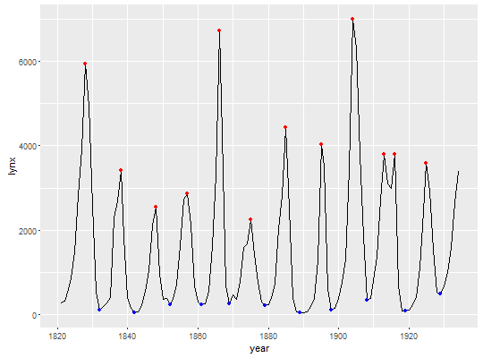
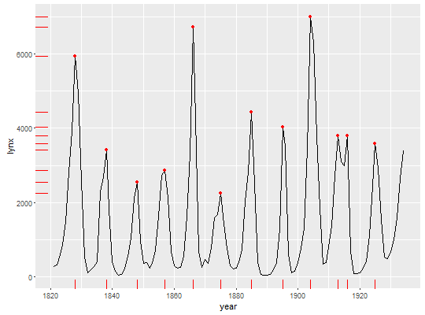

stat_peaks(mapping = NULL, data = NULL, geom = "point", span = 5, ignore_threshold = 0, strict = FALSE, label.fmt = "%.4g", x.label.fmt = NULL, y.label.fmt = label.fmt, position = "identity", na.rm = FALSE, show.legend = FALSE, inherit.aes = TRUE, ...)stat_valleys(mapping = NULL, data = NULL, geom = "point", span = 5, ignore_threshold = 0, strict = FALSE, label.fmt = "%.4g", x.label.fmt = NULL, y.label.fmt = label.fmt, position = "identity", na.rm = FALSE, show.legend = FALSE, inherit.aes = TRUE, ...)
aes or aes_string. Only needs
to be set
at the layer level if you are overriding the plot defaults.NULL value for span
is taken as a span covering the whole of the data range.sprintf.sprintf
or strftime.sprintf.NA, the default, includes if any aesthetics are mapped.
FALSE never includes, and TRUE always includes.FALSE, overrides the default aesthetics,
rather than combining with them. This is most useful for helper functions
that define both data and aesthetics and shouldn't inherit behaviour from
the default plot specification, e.g. borders.layer. This can
include aesthetics whose values you want to set, not map. See
layer for more details.stat_peaks finds at which x positions of local y maxima are located and
stat_valleys finds at which x positions local y minima are located.
Both stats return x and y numeric values for the peaks and formatted
character labels. The formatting is determined by a format string suitable
for sprintf().
These stats use geom_point by default as it is the geom most
likely to work well in almost any situation without need of tweaking. The
default aesthetics set by these stats allow their direct use with
geom_text, geom_label, geom_line, geom_rug,
geom_hline and geom_vline. The formatting of the labels
returned can be controlled by the user.
This stats check the scale of the x aesthetic and if is Datetime it
correctly generates the labels by transforming the numeric x values to
POSIXct objects, in which case the x.label.fmt must be suitable for
strftime() rather than for sprintf().
These stats work nicely together with geoms
geom_text_repel and
geom_label_repel from package
ggrepel to solve the problem of overlapping labels
by displacing them. To discard overlapping labels use check_overlap =
TRUE as argument to geom_text.
By default the labels are character values suitable to be plotted as is, but
with a suitable label.fmt labels suitable for parsing by the geoms
(e.g. into expressions containing greek letters or super or subscripts) can
be also easily obtained.
library(ggplot2) lynx.df <- data.frame(year = as.numeric(time(lynx)), lynx = as.matrix(lynx)) ggplot(lynx.df, aes(year, lynx)) + geom_line() + stat_peaks(colour = "red") + stat_valleys(colour = "blue")
ggplot(lynx.df, aes(year, lynx)) + geom_line() + stat_peaks(colour = "red") + stat_peaks(colour = "red", geom = "rug")
find_peaks